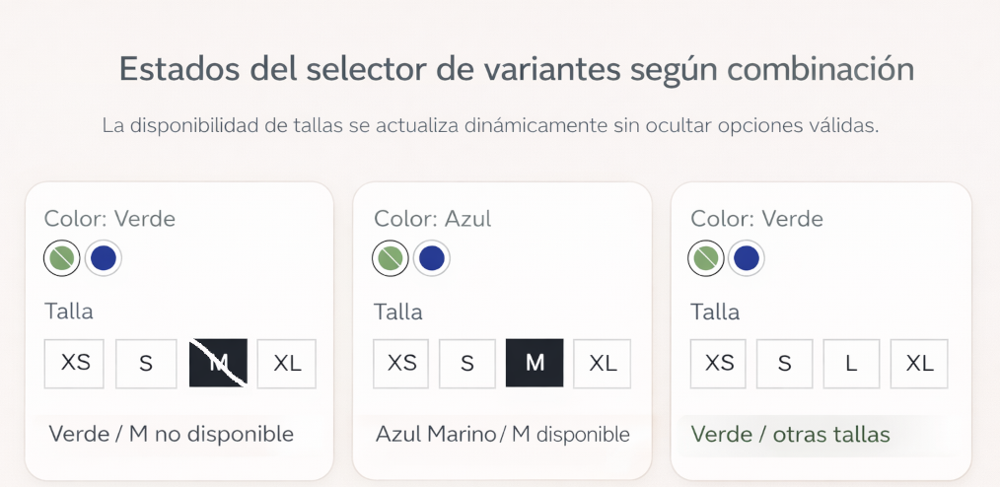

VTEX PDP: Selector de Variantes
Contexto: PDP con catálogos complejos y variaciones por SKU.
- Diseñe un selector accesible con estados claros.
- Integre validaciones de stock en tiempo real.
- Reduje errores de selección en mobile.
Stack: VTEX IO, React, TypeScript
Impacto: Se mejoró la visualización de combinaciones de producto, evitando que opciones disponibles quedaran ocultas al cambiar talla o color, lo que redujo confusion del usuario y mejoro la claridad del estado del inventario.
Repositorio y detalles protegidos por NDA.